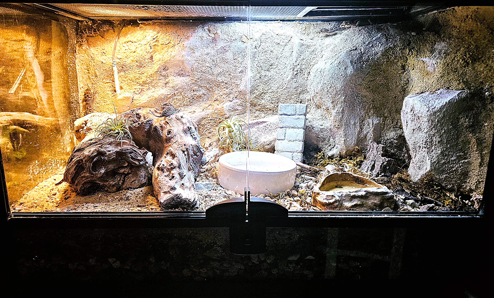

Tank Requirements
The Enclosure
Viper Geckos are rock-crevice specialists. Dense, tight hides along a vertical cork background are essential — open space makes them feel exposed and stressed.
Juvenile Group (2–3)
Length20"
Width10"
Height12"
BrandThrive
Adult Group (2–4)
Length30"
Width12"
Height12"
BrandThrive
Vertical Background
Cork bark wall, full height, packed with cavities and nooks. Moss added to nooks.
Substrate Layering
Recommended to have bio-active mixed substrate with a drainage layer. Add a layer of sand to the top keeping the portions along the back wall exposed for localized humidity.
Avoid
Coconut hides. Coconut fiber substrate. Enclosed plastic decor/hides.

Cork bark vertical background with nook hides & moss Exposed mixed substrate with moss along the back panel
Exposed mixed substrate with moss along the back panel